VAET: A Visual Analytics Approach for E-transactions Time-Series 电子交易时间序列的一种可视化分析方法
Cong Xie, Wei Chen, Member, IEEE, Xinxin Huang, Yueqi Hu, Scott Barlowe, and Jing Yang
创新实践的论文阅读作业，翻译了主要内容，加上部分自己的理解并修改部分内容，保留了部分原文，有时候阅读原文更好理解。全文按照论文组织的方式编写，主要是为了理清楚论文的主要思想，并可以简单地给其他人做宏观上的解释，达到基本的教学目的。此文将作为ppt的前稿。
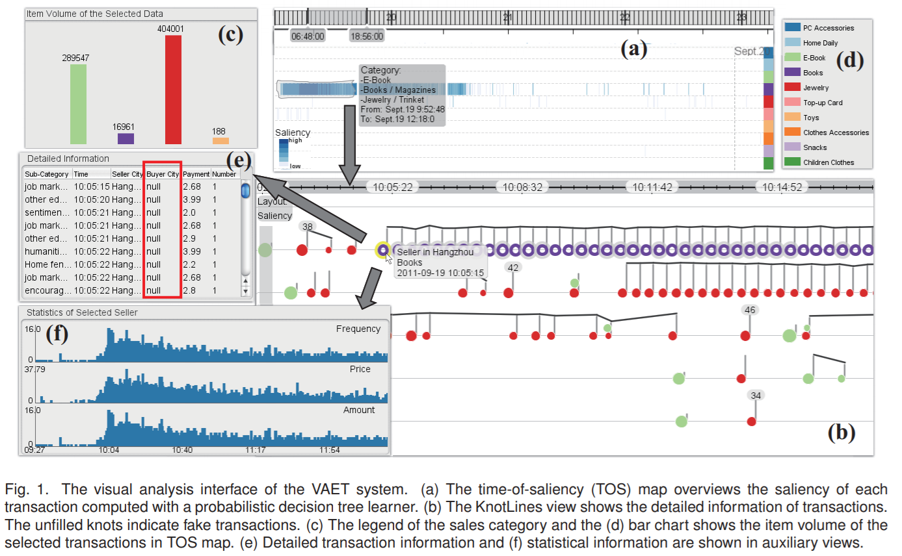
INTRODUCTION 介绍
The E-transaction time-series contains transactions among multiple users in a time range. Each record contains a time stamp, the IDs of the seller and buyer, and the associated attributes of the commodities. Each record is an atomic element representing an online transaction among a seller and a buyer.
电子交易时间序列包含时间范围内的多个用户之间的交易。 每个记录都包含时间戳，卖方和买方的ID以及相关联的商品的属性。每个卖方和买方之间的网上交易记录都是一个原子元素。
在时间上下文中分析电子交易时间序列至关重要了解交易行为，学习用户偏好和发现时间趋势。
通过面试分析师发现以下一些问题常常很难回答：
- 卖方的多个交易之间的时间和
上下文关系是什么？比如短时间内有个卖家有大量的交易，而且可能来自某个买家，分析师需要发现这样的交易的各种属性。 - 最常见的交易模式是什么？比如平时工作日交易比较稀疏，但是圣诞节交易比较频繁。
- 如何识别
有趣的交易？比如买家勾结来加速影响卖家的信用，一旦这样的模式定义好了，分析师需要在相关的大量数据集中找到特定属性值来挖掘这样的交易。 - 如何在上下文检测某个交易？比如小额购买巨量的商品可能是个假的交易，利用它来提升卖家排名。为了确认交易是假的，分析师需要将交易与买方和卖方的信息关联。
我们认为，自动数据挖掘过程在回答上述问题时并没有足够的灵活性和准确性。 因此迫切需要视觉分析方法，使分析人员能够通过集成计算能力，人类知觉能力和领域知识，通过即时视觉反馈灵活地形成和测试假设。
目前还没有适用于上述情况的可视化方法。 多变量时间序列可视化的现有研究工作主要集中在总结多维度的全局和/或时间趋势或发现个体维度的模式，如Sparklines。
因此提出了一种新颖的视觉分析系统，称为电子交易时间序列的视觉分析（VAET），旨在探索电子交易时间序列，以便在时间上下文中分析多个用户之间的交易模式。 VAET有如下2个主要的可视化分析组件：
- Overview: This component helps the analysts effectively identify salient transactions from a large dataset. 该组件帮助分析师在大量数据集中快速找到突出的交易。VAET使用概率决策树学习器首先计算每个交易的显着性值，以揭示其与分析目标的相关性（例如，作为假交易的可能性）。然后，显着值显示在一个称为
显着时间映射（TOS）的像素方向的显示中。该映射提供了一个工作空间来探索和选择不同时间粒度的潜在有趣的交易; - Detail view：This component allows the analysts to conduct detailed examination on interesting transactions for insights. 该组件允许分析人员对感兴趣的交易进行仔细检查，以获取见解。特别地，从概述中选择的交易使用称为
KnotLines的新的视觉隐喻来显示。协调TOS映射和KnotLines，以便分析人员可以快速识别来自大型数据集的有趣事务。
A case study and a user study with a real online transaction dataset demonstrated that VAET was effective in supporting a variety of analysis tasks. 真实在线交易数据集的案例研究和用户研究表明，VAET有效支持各种分析任务。
VAET的主要贡献包括：
- 视觉分析系统，允许分析人员在时间上有效地分析大型电子交易时间序列;
- 从大型数据集中检测和可视化突出事务的方法;
- 一种新颖的视觉隐喻，用于紧凑地放置和编码特征属性以及多用户事务的时间和上下文相关性
RELATED WORK 相关工作
Visual Analysis of E-transaction Data 电子交易数据的可视化分析
以下是之前一些人做的过相关研究（寻找合适的可视化方法来展示交易数据）
The transaction data contains various types of attributes, such as numerical, temporal and categorical. The Sparklines [23] can be used to visualize multiple trends in financial data. Liu et al. [11] proposed a visualization system called SellTrend for analyzing airline travel purchase requests. WireVis [3] was proposed to search on predefined patterns in large wire transaction datasets. Visual analytics approaches have been proposed to explore web clickstreams of online transactions [26]. Our approach is among the earliest visual analytics approaches for the exploration of temporal and contextual connections in multiuser transactions.
Transaction data often have multi-dimensional attributes. Analyzing them often requires the integration of well-designed data mining models. Probabilistic models are employed to model user behavior [12], resulting in user clusters. This scheme has been successfully applied to classify E-transaction data into different types [2]. Association analysis is another widely used model for transaction data. Hao et al. [7] proposed the DAV system to visualize the relationships of associated products.
Visual Analysis of User Behavior Time-Series 用户行为时间序列的可视化分析
以前有很多关于用户行为时间序列分析和可视化的作品。这里我们只总结最相关的一些，并将它们分类为分析个人行为，用户交互和组行为的技术。
Temporal Individual Behavior Patterns Many visualization approaches designed to analyze user behavior data are focused on exploring the temporal behavior patterns of individuals.
旨在分析用户行为数据的许多可视化方法都集中在探索个人的时间行为模式。
TimeSearcher [8] allows users to select interesting time-series using a rectangular query region. LifeLines [16] visualizes health-related incidents of patients along a timeline. Most previous works utilize high-dimensional visual exploration tools such as parallel coordinates [4] to explore extracted patterns. Density-based display techniques [6], [10] are capable of showing large time-series datasets for real-time monitoring. Additional visual exploration techniques include time trajectory [21] and [13].
User Interaction Patterns conventional solutions consider the user network as a social network and analyze its global structure
常规解决方案将用户网络视为社会网络，并分析其全局结构。
Sallaberry et al. [20] provide an overview of dynamic network evolution over time. Other approaches emphasize the user interaction characteristics such as email connections [25] and instant messages [27]. However, these methods are focused on the structural changes rather than the temporal variations of the interactions. Other approaches aim to reveal the relationships among multiple users in a temporal context. For instance, Storyline [22] shows the narrative threads that form a plot or a subplot in works of fiction. The history flow approach successfully reveals author collaboration patterns [24]. Code Swarm [15] visualizes the animated histories of software project evolution. VAET reveals both the temporal patterns of multi-user behavior and their atomic level correlations. It improves the above approaches by allowing the analysts to explore a large number of transactions at different granularities.
Problem definition 问题定义
Multi-user transaction data is a special type of user behavior data with a focus on characterizing raw, detailed, and subtle inter-user transactions. An E-transaction time-series dataset contains information about each E-transaction, including information about transaction time, the buyer, and the seller. Each E-transaction records a transaction between a buyer and a seller.
多用户事务数据是一种特殊类型的用户行为数据，重点是描述原始，详细和微妙的用户间交易。电子交易时间序列数据集包含每个电子交易的信息，包括有关交易时间，买方和卖方的信息。 每个电子交易记录买方和卖方之间的交易。
一般来说，一个电子交易包含以下属性：
User informationincludes the IDs and other information about the buyer and the seller who make the transaction, e.g., their age group, gender, and location.Transaction informationincludes the time stamp and other information about the commodities, e.g., the payment amount, the number, and the sales category of the commodity.
The above attributes can be numerical, ordinal, categorical, textual, or temporal. 上述属性可以是数字，序数，分类，文本或时间。
分析师通常通过一系列低级别任务进行复杂的任务。 这些任务通常关注卖方的行为，例如：
- 识别感兴趣的时段和/或销售类别。
- 识别具有特定属性的有趣模式的交易（例如，支付金额≥500）并检查其详细信息。
- 识别具有有趣交易模式的卖家，例如卖家以小额付款金额进行频繁交易。
- 检查特定卖家的交易模式
The analysts usually conduct a complex task through a set of low level tasks. These tasks typically focus on the behavior of the seller, such as:
- T1 Identifying time periods and/or sales categories of interest.
- T2 Identifying transactions with interesting patterns in specific attributes(e.g., payment amount ≥ 500) and examining their detailed information.
- T3 Identifying sellers with interesting transaction patterns, such as a seller making frequent transactions with small payment amounts.
- T4 Examining the transaction patterns of a specific seller
我们使用术语显着定量地描述交易与分析师定义的目标的相关程度。根据调查，识别和审查突出交易是电子交易时间序列探索中至关重要但具有挑战性的任务。通常，分析师需要通过迭代查询数据集并检查检索到的事务之间的属性值和关系来手动识别突出事务。此外，分析师经常需要检查突出交易以及用户的历史数据等信息，以证明其行为或揭示有趣的模式。这个过程通常是费力和乏味的。VAET旨在简化此过程，提高整体运行效率。（VAET is designed to ease this process and improve the overall operation efficiency.）
APPROACH OVERVIEW 方法概览
The goal of VAET is to identify and explore interesting transactions by selecting those with high saliency and studying them. This is accomplished by integrating the capabilities of both data mining and visualization techniques within the following iterative visual exploration pipeline.
VAET的目标是通过选择具有高度显着性并研究它们来识别和探索有趣的交易。这是通过将数据挖掘和可视化技术的功能集成在以下迭代视觉探索流程中来实现的。
步骤1，使用决策树的显着计算：从每个事务中提取一组特征。分析人员将某些交易的功能手动标记为训练数据。使用这些特征，在训练数据上构建概率决策树学习器。然后用它来产生每个未标记交易的显着值（图2（b））。
步骤2，使用TOS映射进行浏览和选择：所有事务的显着性值映射到紧凑的基于密度的生存时间（TOS）映射。在此映射中，交易按时间和类别排序，并以颜色对应于显着值的像素表示。分析师可以交互地探索映射，调查全球分布和地域格局，并选择根据这个观点的显着性值，有趣的交易。（图2（c））。
步骤3，使用KnotLines进行详细分析：分析师选择的交易通过一种新颖的视觉隐喻
KnotLines可视化，允许研究多个属性和上下文连接（图2（d））。分析人员确定为突出事务的交易可以被标记并反馈到步骤1以继续迭代过程（图2（e））。Step 1 Saliency computation with decision tree: A set of features are extracted from each transaction. The analysts manually label the features of some transactions as the training data. Using these features, a probabilistic decision tree learner is constructed upon the training data. It is then employed to produce the saliency values for each unlabeled transaction (Figure 2 (b)).
Step 2 Browsing and selection using the TOS map: The saliencyvalues of all transactions are mapped to a compact, density-based Time-Of-Saliency (TOS) map. In this map, transactions are ordered by time and categories and represented by pixels whose colors correspond to saliency values. The analysts can interactively explore the map, investigate the global distribution and local patterns, and select interesting transactions according to the saliency values from this view. (Figure 2 ©).
Step 3 Detailed analysis using KnotLines: The analyst-selected transactions are visualized with a novel visual metaphor, KnotLines, that allows the study of multiple attributes and contextual connections (Figure 2 (d)). The transactions identified as salient by the analysts can be labeled and fed back into Step 1 to continue the iterative process (Figure 2 (e)).
分析人员可以通过调整标记的数据集，导航映射和探索有趣的交易来迭代地循环上述步骤。 TOS映射和KnotLines可视化提供可扩展的探索，如时间间隔选择和详细审查。
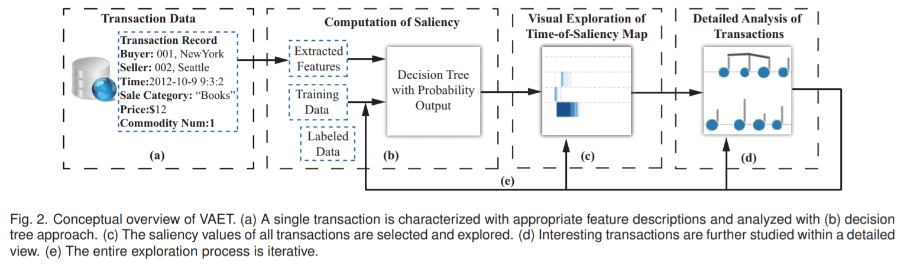
SALIENCY COMPUTATION WITH DECISION TREE 决策树的显著性计算
计算显着性值本质上是上下文感知和任务定位的。 对于许多任务，显着性值不能直接从事务属性导出。 例如，当分析师搜索异常交易时，往往需要考虑卖方的交易频率。 让分析人员手动指定每个交易的显着性值也是不切实际的。 因此，我们建议通过定义和计算一组交易的特征来计算每个记录的显着性值。特别地，我们的方法通过概率决策树计算显着值作为概率估计问题。 我们选择决策树，因为它可以处理连续和分类的属性，很容易解释。 决策树最初由一组分析师确定的训练数据的特征构建。 将决策树应用于每个未标记事务的特征，产生的概率范围为0到1，用作底层事务的显着值。 分析师手动标记为交易的交易可以在随后的分析中添加到训练数据集中（图2（e））。
Feature Extraction 特征提取
VAET计算一组分析师指定的每个事务的时间和上下文特征作为一组特征。 一般来说，定义了三种类型的特征：
基本特征确定交易是否有趣的一个直接方法是使用指定属性的值作为基本特征，例如商品的支付金额。另外，分析人员可以定义新的属性。例如，如果卖家在分析师给出的有趣的列表中，则他或她被视为显着的卖家，如图3所示。这些属性的集合构成一组基本功能。文本功能交易可以包含文本信息，例如商品的评论。 VAET检查文本信息是否包含分析师指定列表中的敏感词。分析人员保留一个字典，用于从过去几个月手动收集敏感的词汇和短语。例如，在一种欺诈交易中，买家希望尽快回收现金。 “现金回馈”是一个敏感的短语。敏感词在不同的情况下有所不同，可以视为文字特征。时间特征交易序列的时间模式对于识别数据集中的有趣模式至关重要。例如，卖方在时间间隔内的交易金额表示他或她的受欢迎程度。然而，以传统的决策树方法难以发现面向时间的关系。为了解决这个问题，VAET使用卖方在每个时间间隔的交易频率作为衡量时间趋势。时间间隔的大小取决于数据收集配置。Basic FeaturesOne straightforward way to determine whether a transaction is interesting is to use the values of specified attributes as basic features, such as the payment amount of a commodity. In addition, the analysts can define new attributes. For example, if a seller is in the interesting list given by the analyst, he or she is considered as a salient seller, as shown in Figure 3. The collection of these attributes constructs a set of basic features.Textual FeaturesA transaction may contain textual information, such as the comment of a commodity. VAET examines whether the textual information contains sensitive words in a analyst-specified list. The analysts keep a dictionary for sensitive words and phrases collected manually from the past several months. For example, in a kind of fraud transactions, the buyers want their cash back as soon as possible. “cash back” is a sensitive phrase here. Sensitive words vary in different situations, and can be regarded as textual features.Temporal FeaturesTemporal patterns of a sequence of transactions are essential for identifying interesting patterns in the datasets. For example, the transaction amount of a seller in a time interval indicates his or her popularity. However, time-oriented relations are difficult to discover with conventional decision tree approaches. To address this problem, VAET uses the transaction frequency of the seller in every time interval as a measure of the temporal trend. The size of the time interval depends on the data collection configuration.
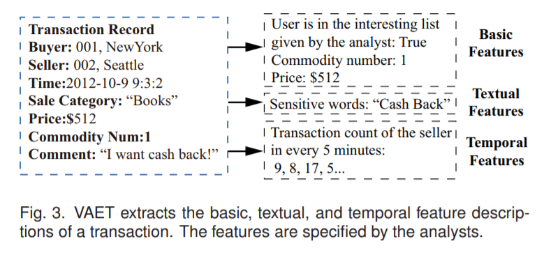
Estimating saliency using Probabilistic Decision Tree 使用概率决策树估计显着性
决策树最初使用训练数据集构建，该数据集由分析师标记的交易的提取功能组成。 如图2（e）所示，可以通过添加分析员标识的事务，在可视化探索过程中手动更新训练数据集。 在我们的方法中，使用完善的C4.5算法从训练数据中自动构建决策树，其根据特征将训练集递归地分解为子集。 在决策树中（参见图4的示例），叶子节点表示类（显着或非显着2个类别），内部节点对应于特征。 在每个内部节点处，C4.5根据产生最高归一化信息增益（highest normalized information gain）的特征将样本分解为子集，并将特征分配给该节点
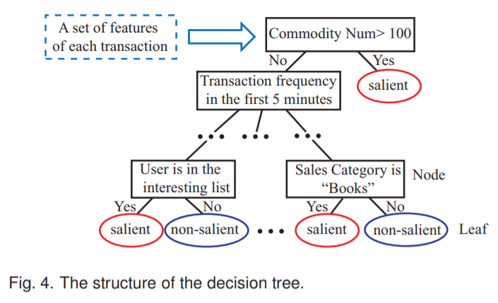
概率根据决策树叶上的交易进行估计。 我们将FP表示为叶上的假阳数，T P表示真阳数（见图5中的混淆矩阵）。 叶上的概率分布估计由下式给出:
P(y|x) = TP / (TP + FP)
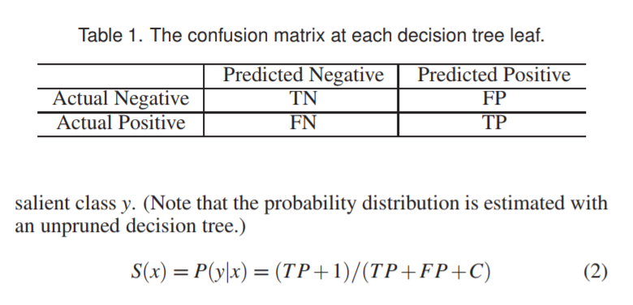
TIME-OF-SALIENCY MAP: BROWSING A LARGE SET OF TRANSACTIONS 显著性时间映射：浏览大量交易集
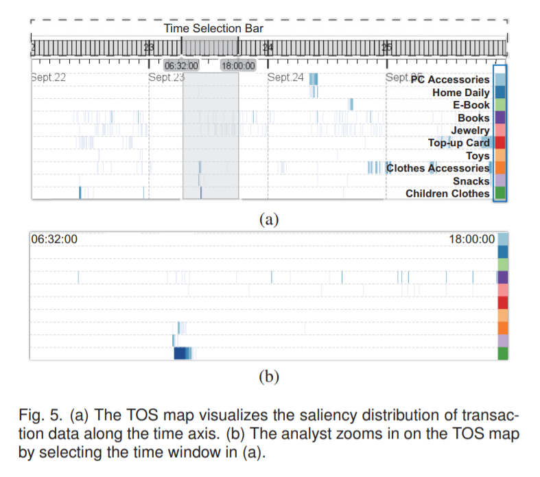
Generation of Time-Of-Saliency Map 生成显著性时间映射
TOS映射是基于2D密度的展示，沿着水平轴的时间和由销售类别（例如，“电子配件”和“衣服”）组织的垂直轴TOS映射均匀分割成行，每个行代表一个销售类别。在图（a）中，由蓝色框突出显示的颜色矩形提供了垂直轴上类别的视觉索引。此外，每行按照*时间间隔水平分割*。*根据其时间戳和销售类别*每个事务被投射到相应的单元。投射到同一个单元格的所有事务的显着值相加，并将总和映射到单元格的颜色。色彩映射可以使用默认颜色标度或分析器指定的色标。所得到的TOS映射可视化地为分析任务编码事务的相关性。*黑暗区域*意味着一组潜在有趣的交易。特别地，连续的暗带表示在一段时间内相应的销售类别中的高度突出的交易（参见图1（a）中的TOS映射中的所选区域）。
Time-Of-Saliency Exploration 探索显著性时间映射
TOS映射视图中提供了以下交互，可用于完成第一个任务（即识别感兴趣的时段和/或销售类别。）
时间窗口TOS映射以分析人员可调节的时间间隔显示交易。可以使用额外的时间窗口小部件来定位视图的特定区域以进行进一步和详细的研究。分析师可以在时间选择栏上单击并拖动以设置TOS映射的时间窗口，如图5（a）中TOS映射顶部的突出显示。图5（b）显示了分析师设置时间窗口后的TOS映射。感兴趣的区域分析师可以点击类别索引（图5（a）中的蓝框）来选择同一类别的交易。 也可以使用套索工具来选择有趣的区域。 当选择一个区域时，将出现一个浮动文本框以显示有关该区域的信息。 所选交易的详细信息可以在第7节中描述的KnotLines视图中进一步可视化和探索。此外，还提供了一个条形图视图（图1（c））以显示所选数据中的类别的销售量。Time WindowingThe TOS map shows the transactions in an analyst-adjustable time interval. An additional time windowing widget can be used to locate a specific region of the view for further and detailed study. Analysts can click and drag on the time selection bar to set the time window of the TOS map, as highlighted over the top of the TOS map in Figure 5 (a). Figure 5 (b) shows the TOS map after the analyst sets the time window.Region-Of-InterestSelection The analysts can click on the category index (the blue box in Figure 5 (a)) to choose the transactions of the same category. A lasso tool can also be used to select interesting regions. When a region is selected, a floating text box will appear to show the information about the region. The detailed information of selected transactions can be further visualized and explored in the KnotLines view described in Section 7. In addition, a bar chart view (Figure 1 ©) is provided to show the sales volume of categories in the selected data.
KNOTLINES: EXAMINING TRANSACTIONS IN DETAIL 详细审查交易
KnotLines允许分析师对从TOS映射中选择的显着交易进行详细分析。它旨在解决任务2到任务4。KnotLines可视化显示两种类型的信息：属性和交易的时间趋势。
Data Organization and Visual Layout 数据组织和视觉布局
为了研究交易之间的属性相似性和时间相关性，所选择的交易集被组织成一个三级分层树（图6）。 首先，我们使用矩阵表来可视化事务的组织，如图7（a）所示。
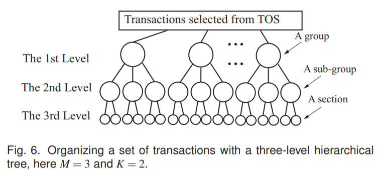
一级整个选定的交易集根据不同的卖家分为N组（1级）。图7（a）中的*每一行代表一个组*。一组包含卖家的所有交易。这些组沿垂直轴从上到下列出。二级一组中的交易根据其时间戳进一步分为子组（2级）。图7（a）中的*水平轴表示时间*。每行分别对应于M个时间间隔的时间轴上的M个正方形。所有间隔的长度相同，可以调整以探索不同粒度的数据。属于相同时间间隔的卖方的交易形成一个子组（2级）。三级根据销售类别（例如，“图书”），将一个子组进一步分为（级别3）。在图7（a）中，每个正方形被分割成K个细胞，每个细胞代表一个部分。同一部分的交易由同一卖方作出，在同一时间间隔内进行，属于同一销售类别。
PS：即三级严格递增，一级是属于同一个卖家，二级属于同一个卖家某段时间，三级属于同一个卖家某段时间的某类销售类别。分别按行，按列，按细胞划分。这个是交易集逻辑上关系，而图7是一种为了方便分析而设计表示该关系的可视化方法。
Level OneThe whole selected transaction set is divided into N groups (level 1) according to different sellers. Each row in Figure 7 (a) represents a group. A group contains all transactions of a seller. The groups are listed from top to bottom along the vertical axis.Level TwoThe transactions in a group are further divided into subgroups (level 2) according to their time stamps. The horizontal axisin Figure 7 (a) represents the time. Each row is split into M squaresalong the time axis which correspond to M time intervals. The lengthsof all intervals are the same and can be adjusted to explore the data at different granularities. Transactions of a seller which fall into the same time interval form a sub-group (level 2).Level ThreeA subgroup is further divided into sections (level 3)according to the sales categories (e.g., “Books”). In Figure 7 (a), each square is segmented into K cells, each of which represents a section. Transactions in the same section are made by the same seller, take place in the same time interval, and belong to the same sales category.
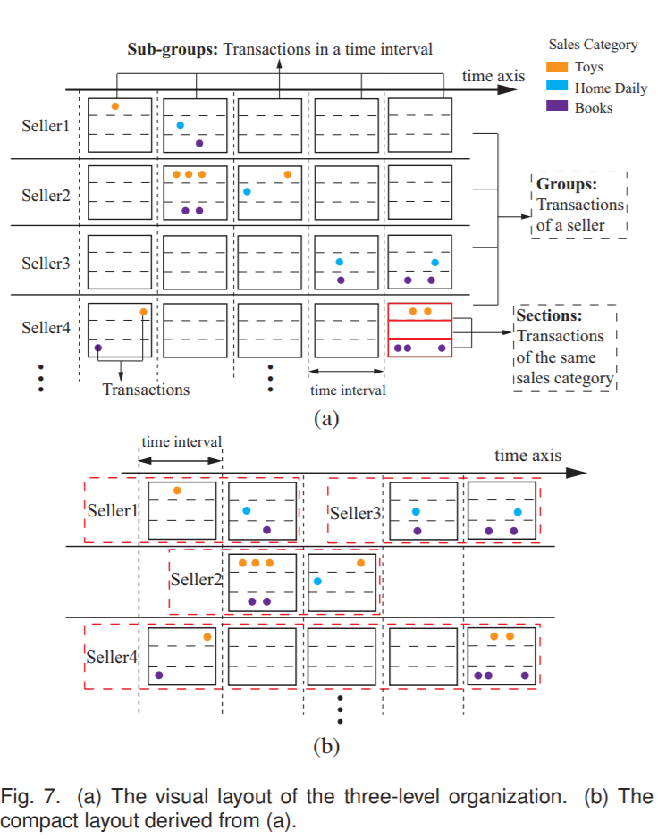
因为大部分卖家的交易量在一天的时间内可能很高，因此图7（a）所示矩阵中的交易密度可能非常稀疏。 另外，组N的数量可能很大（例如，100万）。 为了使探索更加有效，矩阵式布局应重新设计为更紧凑。
VAET采用一个简单的两步启发式方案，对每个组进行操作。
在第一步中，删除第一个非空子组之前和最后一个非空子组之后的空子组。 这个步骤导致许多组仅覆盖水平空间的一小部分，因为它们中的大多数具有短的时间跨度。
为了增加空间效率，在第二步中启发式优化组的布局。 迭代布局策略用于满足以下原则：
- 整洁：组不应重叠;
- 紧凑型：空间利用率高;
- 代表：重要群体应优先展示
VAET employs a simple two-step heuristic scheme that operates on each group. In the first step, empty sub-groups before the first nonempty sub-group and after the last non-empty sub-group are removed. This step results in many groups that only cover a small portion of the horizontal space, because most of them have a short time span. To increase the space efficiency, the placement of the groups is heuristically optimized in the second step. An iterative layout strategy is used to satisfy the following principles:
- Uncluttered: groups should not overlap;
- Compact: space utilization should be high;
- Representative: important groups should have a display priority
分析人士指出， 这种设计（即图7） 有几个主要缺点：
- 由于部分可能包含数百个交易，可视化严重凌乱。 分析师建议在同一部分内汇总交易;
- 分析师认为，紧凑的布局是空间效率高的必需品。 然而，他们很难从这个视图来识别同一卖家所做的交易。需要额外的视觉属性来强调这一重要关系;
- 在此视图中没有提供有关交易的重要信息，如付款金额，交易是否缺少值，以及是否经常发生相同的交易。
The analysts pointed out that there were several major drawbacks in this design: (1) The visualization was seriously cluttered since a section may contain hundreds of transactions. The analysts suggested aggregating transactions within the same section; (2) The analysts agreed that the compact layout was necessary for high space efficiency. However, it was difficult for them to identify transactions made by the same seller from this view. Additional visual attributes were desired to emphasize this important relationship; (3) Important information about the transactions such as payment amount, whether a transaction had missing values, and if identical transactions occurred frequently, was not presented in this view.
KnotLines （结线）
为了解决上述问题，我们设计了一个增强的视觉隐喻调用KnotLines。它受到音乐符号的启发，这可以被看作是一个改进的散点图，它沿着时间轴放置不同类型的点（音符）。它是时间序列（例如节拍和节奏）及其连接的复杂视觉表示。
这里就不详细说明了，具体见表2。
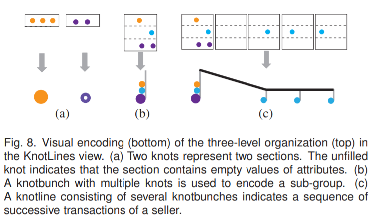
表2 是Knotlines的可视化各个部分的含义 | 图形部分 | 含义| |—-|—-| | 视觉编码 | 交易数据| | 一个knotline | 同一卖家在不同时间的交易（一组）| | 一个knotbunch | 同一卖家在一段时间间隔内进行交易（一个子组）| | 茎长 | 在一段时间内同一卖家的交易总支付金额| | 一个结 | 在一段时间内，同一卖家与同名销售类别的交易（一节）| | 结的颜色 | 该结点的销售类别| | 结的大小 | 该结点的商品数量| | 一个未填充的结点 | 与卖方或买方位置异常的交易|
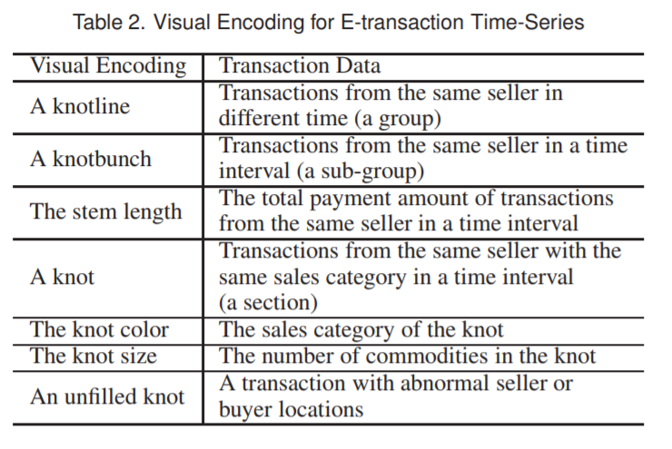
Visual Exploration 可视化探索
除了布局模式的规范和详细结点的调查之外，KnotLines还提供了一套用于分析多个结线的交互。
显着调制KnotLines视图中显示的每个事务都包含一个显着值。 分析师可以显示从2D TOS映射中选择的所有交易，或仅显示显着值大于给定阈值（例如，0.8）的所选交易。 当视图中显示许多节线时，此过滤操作非常有用，因此它支持T2和T3。 图9显示了显着性调制的影响。查看导航KnotLines视图可以水平放大，以清楚说明，这对T2和T3有帮助。 时间间隔的长度将相应调整。 分析师可以垂直或水平滚动查看更多的knotlines。兴趣选择结我们可以通过单击或使用套索工具拖动来选择一组结。 指定结时，会以黄色的圆圈突出显示。 由同一买家制造的相关结也用灰色的圆环突出显示分析师的注意力（图1（b））。 将出现一个浮动文本框，显示所选结的详细信息，如卖方的位置，支付金额和销售类别。 分析员可以在详细视图（图1（e））中的所选结（部分）中检查交易的信息（例如，买方和卖方的位置，子类别和商品编号），其中 是为T2设计的。 对T4有帮助的统计视图（图1（f））用于提供所选结的统计信息，如交易频率和卖方支付金额的趋势。标签当特定交易被分析师识别为突出显示时，可以将其添加到标记数据中进行迭代视觉分析和探索。Saliency ModulationEach transaction shown in the KnotLines view contains a saliency value. The analysts can show either all transactions selected from the 2D TOS map or only the selected transactions whose saliency values are larger than a given threshold (e.g., 0.8).This filtering operation is useful when there are many knotlines shown in the view, so it supports T2 and T3. Figure 9 demonstrates the effect of saliency modulation.View navigationThe KnotLines view can be zoomed horizontally for clear illustration, a function helpful for T2 and T3. The lengths of the time intervals will be adjusted accordingly. Analysts can scroll vertically or horizontally to see more knotlines.Knots of Interest SelectionWe can select a set of knots by clicking, or dragging using a lasso tool. When a knot is specified, it is highlighted with a yellow ring. Related knots which are made by the same buyer are also highlighted with grey rings to draw the analysts’ attention (Figure 1 (b)). A floating text box will appear displaying the detailed information of the selected knot such as the location of the seller, the payment amount, and the sales category. Analysts can check the information of the transactions (e.g., the location of the buyer and the seller, the sub-category, and the commodity number) in the selected knot (section) in the detail view (Figure 1 (e)), which is designed for T2. A statistic view (Figure 1 (f)), which is helpful for T4, is used to present statistical information for the selected knot, such as the trend of the transaction frequency and the payment amount of the seller.LabelingWhen a specific transaction is identified as salient by analysts,it can be added to the labeled data for iterative visual analysis and exploration.
CASE STUDY 案例研究
PS: 这部分应该是论文作者讲述一次真实分析过程，里面有分析的思路与流程，还有该系统的使用特点。
来自我们的客户 - 客户（C2C）零售业务的数据部门的分析师参与了这项研究。 该公司提供了一个数据集，其中包含2600万个在线电子交易，从中他们想要检测假交易。 约有930万卖家和买家参与了数据集。 他有兴趣通过与合作伙伴买家建立假交易来识别卖家何时积累信用。 异常交易行为的一些指标可能是异常大量的商品，支付金额的大幅变化，特定卖方和买方之间的频繁交易，以及价值超出其正常范围的属性。
Construction of Decision Tree 决策树构建
计算每个时间间隔内的卖方的交易频率并将其用作时间特征。 根据由分析者提供并用作文本特征的敏感字典，提取了评论中的关键词和短语（例如“信用”）。我们标注了大约300笔交易，这些交易是使用分层抽样从每个类别中选出的。 我们用标记的数据训练了决策树。 将要分析的交易的提取特征描述作为决策树的输入，并为每个输入产生显着性值。
我们使用精确率p和召回率r来评估决策树的效率：p = TP /（TP + FP）= 0.89，r = TP /（T P + FN）= 0.92，其中TP，TN，FP和FN 从训练数据的预测结果中计数（见表1）。
PS: 这几个概念一般用于评估机器学习算法的性能等指标，也是广泛用于信息检索和统计学分类领域的两个度量值，用来评价结果的质量。 决策树算法在这里的作用只是用来找到显著性值。
Abnormal Frequency and Locations of Transactions 异常频率和交易地点
分析师在简短的培训课程之后开始在TOS映射中进行勘探。他注意到一个具有高度显着性的长长的地区（图10）。随后，分析师指定了时间窗口，并放大到所需的区域。为了进一步研究交易行为，分析师选择了这个地区，发现许多交易在9月19日上午10点被分类为“图书”。分析师注意到连续的红色结在图1（b）的连线上连接。他告诉我们，*这种模式表明卖家在选定的时间间隔内频繁交易*。经查核详细资料后，分析师发现这些交易属于“充值卡”类别，并由*不同的买家*组成。他评论说，这可能是一个促销活动，因为他在这些交易中没有发现异常信息。分析师将显着阈值增加到0.8，显着调制滑块（Saliency Modulation）。*这使得分析师能够有效地过滤出许多不太显着的交易*。分析师立即找到多个未填充的结，指示具有缺失值的交易。他评论说，使用未填充的结来呈现缺失值的交易有效地吸引了他的注意。为了进一步调查这些记录是否表示促销或假交易，分析师进行了进一步分析。*当他点击这条结线中的一个未填充的结时，同一个结线中的许多其他结被突出显示*（图1（b）），表明这些结的大部分交易是由同一买方和卖方进行的。分析师注意到，详细信息视图中，买方的交货地址为空，通过查看此结线中的结的详细信息（图1（e））。他评论说这是可疑的，因为如果买方不填写他的地址，买家就不会买到这个商品。通过查看结的交易历史（图1（f）），分析师发现，卖方的销售额在一段时间内急剧增加。
分析师认为这些交易可能与赚取信用有关。 该结论由数据提供商的商业智能部门的分析师进行了验证，他们检查了与交易相关的其他信息，如卖方和买方的IP地址。 他们解释说，这些交易是由一组帮助卖家增加信用的买家进行的，卖家没有真正交付产品。 分析师将这一结线中的交易标示为显着，并将它们添加到训练数据集中。
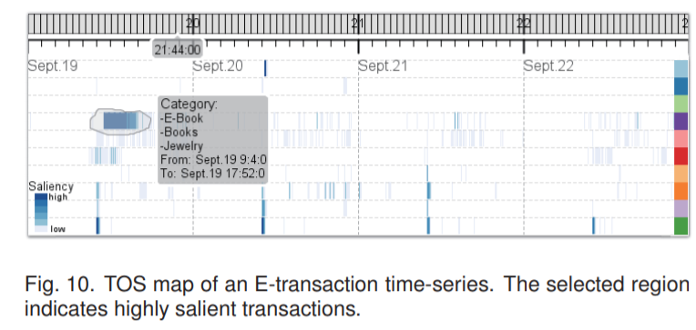
Abnormal Attribute Values of Transactions 交易的异常属性值
分析师在TOS映射中选择了另一个时间窗口。通过查看条形图视图中的销售类别信息（图11（a）），分析师发现，“电子配件”类别中销售的商品总数远远大于其他销售类别。*分析师认为，由于商品数量庞大，这将是促销活动*。他在knotline视图中调查了这个假设，但没有发现任何包含频繁连续的“电子配件”结。
分析师在TOS映射中选择了此类别，以过滤掉不相关的类别。通过仔细检查剩余的结，分析师发现一个具有短茎的极大的结（图11（b）），表明一个较大的商品数量，总支付金额却较低。分析师告诉我们，“*通过这种knotline，我第一眼就注意到支付和商品数量之间的异常关系*”。结的详细视图（图11（c））显示，本节包含单笔交易，支付金额仅为10美分，商品却为22万件。通过进一步调查卖方的交易历史（图11（d）），分析师消除了销售促销的概率，因为卖方在一段时间内交易次数很少，表明销售商品很少。分析师认为这是一个事件，卖方试图根据已经出售的商品数量增加他们的互联网搜索排名。*分析师还将该交易标注为显着，并将其添加到训练数据集*。
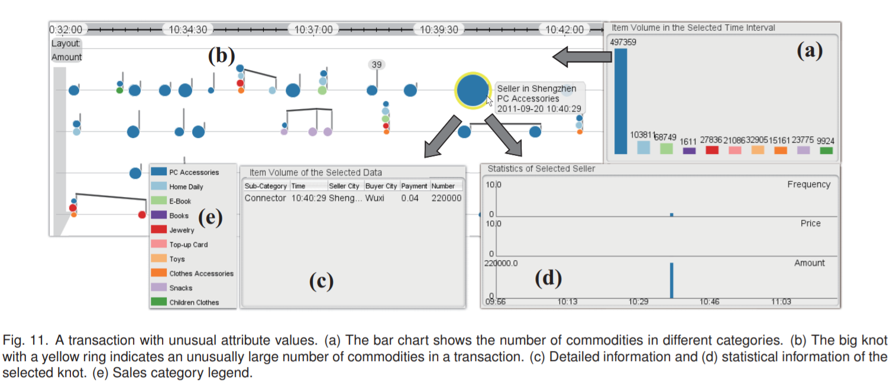
USER STUDY 用户研究
我们进行了用户研究，*以评估VAET支持低级别分析任务的能力*，即第3节中讨论的T1-T4。所使用的数据集是第8节（即上一节）中探讨的交易数据集。
Design 设计
10名参与者（6名男性和4名女性）年龄介于21岁至35岁之间进行了用户研究。 其中两人是分析师，其他人则是研究生。 所有参与者都具有使用在线商务的经验，并且对电脑熟悉。 学生的专业包括计算机科学，设计，数学和生物学。 以前他们都没有使用过VAET。
参与者一个接一个地参加研究。 对于每个参与者，在测试部分之前进行了短暂的训练。 在培训部分，教练首先向参与者介绍了VAET的25分钟演示。 在演示过程中，教练解释了VAET的视觉设计和功能。 在演示之后，参与者在教练的帮助下练习了VAET提供的互动5分钟。 在测试部分，参与者被要求完成9次练习，与实际分析中遇到的练习类似，无需教练帮助。 然后，他们被要求通过回答问卷并提供主观反馈来评估系统。
这9个练习是针对三种不同的具体情况而设计的，其中两项是在第8节中描述的。每个低级任务都通过一项或多项练习进行评估。 他们评估的练习和任务如下（任务显示在括号中）：
- E1 “使用TOS映射，从9月21日上午9点至10点选择具有最高显着性的销售类别。”目标：确定TOS映射（T1）中感兴趣的时间段和销售类别。
E2和E3来自第8.3节所述的情况。
E2 “选择商品数量最大的销售类别”。目标：解释条形图并确定感兴趣的销售类别（T1）。
E3 “查找KnotLines中商品数量最多的交易。”目标：解释一个结的视觉编码，并识别具有特定属性（T2）的有趣模式的交易。
要完成E4-E6，参加者将被要求在9月19日晚上18点至19点之间设置时间，并选择“充值卡”。
E4 “从KnotLines视图中找到具有最高交易频率的卖家（knotline）”。目标：解释knotline的视觉编码，并识别有趣的交易模式（T3）的卖家。
E5 “在KnotLines视图中，哪些卖方的交易模式不会发生？ （a）大量商品的单笔交易，但支付金额很小。 （b）低频连续交易。 （c）持续交易频率高，支付金额小。 （d）我不知道。“目标：解释这个knotlines和识别有趣的卖家交易模式（T3）。
E6 “E4中卖方交易历史的一个特征是什么？ （a）持续，频繁的交易。 （b）偶尔交易。 （c）突然，频繁的交易。“目标：以统计视角检查卖方的行为（T4）。
E7 - E9与8.2节描述的情况相同。
E7 “在KnotLines视图中查找未填充的结，并报告买方城市。”目标：使用详细信息视图（T2）检查事务的属性值。
E8 “E7中确定的卖方交易历史的主要特点是什么？ （a）持续，频繁的交易。 （b）偶尔交易。 （c）突然，频繁的交易。“目标：使用统计视图检查卖方的行为（T4）。
E9 “E7中确定的卖方的交易行为是什么？ （a）具有大量商品编号的单一交易。 （b）付款金额低的频繁交易。 （c）与异常购买城市频繁交易。“目标：解释和检查KnotLines（T4）的卖方交易模式。
E1 “Choose the sales category with the highest saliency value from 9 am to 10 am on September 21 using the TOS map.” Objective: Identify time periods and sales categories of interest in the TOS map (T1).
E2 and E3 were from the case described in Section 8.3.
E2 “Choose the sales category with the largest commodity number.” Objective: Interpret the bar chart and identify sales categories of interest (T1).
E3 “Find the transaction with the largest number of commodities in KnotLines.” Objective: Interpret the visual encoding of a knot and identify transactions with interesting patterns in specific attributes (T2).
To finish E4 - E6, participants were asked to set the time between 18 pm and 19 pm on September 19, and choose “Top-up Card”.
E4 “Find the seller (knotline) with the highest transaction frequency from the KnotLines view.” Objective: Interpret the visual encoding of a knotline and identify sellers with interesting transaction patterns (T3).
E5 “In the KnotLines view, which transaction pattern of the seller does not occur? (a) Single transaction with a large number of commodities but a small payment amount. (b) Continuous transactions with low frequency. © Continuous transactions with high frequency and a small payment amount. (d) I don’t know.” Objective: Interpret the knotlines and identify interesting seller transaction patterns (T3).
E6 “Which is a feature of the seller transaction history of the knot in E4? (a) Continuous, frequent transactions. (b) Occasional transactions. © Sudden, frequent transactions.” Objective: Examine the seller’s behavior in the statistic view (T4).
E7 - E9 were the same case described in Section 8.2.
E7 “Find unfilled knots in the KnotLines view and report the buyer cities of them.” Objective: Examine the attribute values of the transactions using the detailed information view (T2).
E8 “What is the main feature of the seller’s transaction history of the knot identified in E7? (a) Continuous, frequent transactions. (b) Occasional transactions. © Sudden ,frequent transactions.” Objective: Examine the seller’s behavior using the statistic view (T4).
E9 “What is the transaction behavior of the seller identified in E7? (a) A single transaction with a large commodity number. (b) Frequent transactions with low payment amounts. © Frequent transactions with abnormal buyer cities.” Objective: Interpret and examine the seller’s transaction patterns from KnotLines (T4).
练习结束后，参加者完成了由6个问题组成的调查问卷（Q1〜Q6）。 要求用1到5评估等级（1=非常简单或高效，5=非常困难或低效），*学习该VAET系统的难度和VAET的效率*。 这些问题也收集到主观反馈。 六个问题如下：
- 容易或难以学习TOS映射？
- 使用TOS映射探索显着数据是否有效？
- 单个结的
视觉编码是否容易或难以解释？ - KnotLines的视觉编码和布局是否容易或难以解释？
- 使用KnotLines分析用户交易模式是否有效？
- 使用VAET整体分析多用户行为是否容易或困难？
- Is it easy or hard to learn the TOS map?
- Is it efficient or not to explore salient data with the TOS map?
- Is it easy or hard to interpret the visual encoding of a single knot?
- Is it easy or hard to interpret the visual encoding and layout of KnotLines?
- Is it efficient or not to analyze the user transaction patterns with KnotLines?
- Is it easy or hard to analyze multi-user behavior with VAET as a whole?
Results 结果
收集9次练习的准确性和时间进行评估
总体来说，参加者完成了练习，在90次全部练习中产生5次错误（精准度为94.4％）。分析师正确回答了所有问题。对于学生参与者，其中两人在E5上出错，E8上有两个错，E9上有一个错。
我们采访了E5的错误参与者。他们都说他们“只注意到knotlines的主要模式，忽略了发生较少的模式”。但是，他们没有解释用户行为的问题。回答E8的参与者错误地提到他们忘记检查统计视图中显示的卖家历史信息（图1（f）），而是根据KnotLines视图回答问题。在E9错误的参与者认为，零买家城市（null buyer cities）对于不需要交货地址的电子书等虚拟商品的交易是正常的。事实上，“图书”类别中的所有商品都是实物。虽然一些参与者有T3和T4的问题，但总体准确性表明VAET可以很好地支持任务。
Overall, the participants completed the exercises, yielding 5 mistakes out of the 90 total exercises (94.4% accuracy). The analysts answered all questions correctly. As for the student participants, two of them erred on E5, two erred on E8 and one erred on E9.
We interviewed the participants who erred on E5. They both said that they “only noticed the main patterns of the knotlines and ignored the patterns with fewer occurrence”. However, they had no problem interpreting the user behavior from them. The participants who answered E8 incorrectly mentioned that they forgot to check the seller history information shown in the statistic view (Figure 1(f)) and answered the question based on the KnotLines view instead. The participant who erred on E9 thought that null buyer cities are normal for transactions of virtual commodities such as E-books, which do not need delivery addresses. In fact, all commodities in the “Books” category are real items. Although some participants had problems with T3 and T4, the overall accuracy indicates that VAET supports the tasks well.
图12显示了每次锻炼的完成时间的平均值和标准偏差。 E3，E4和E7的时间比其他问题的时间长。 这三个练习要求参与者搜索具有特定特征的knotlines，这可能需要更多的时间仔细检查视图。 参与者能够快速完成其他6个问题。 完成时间为5.14s至44.22s。 分析师花费的时间远远少于学生参与者。 总体而言，VAET允许大多数参与者在90秒内完成复杂的练习和任务（如E4和T3）。 在考虑交易的各种属性以及它们之间的关系时，这是相当快的。
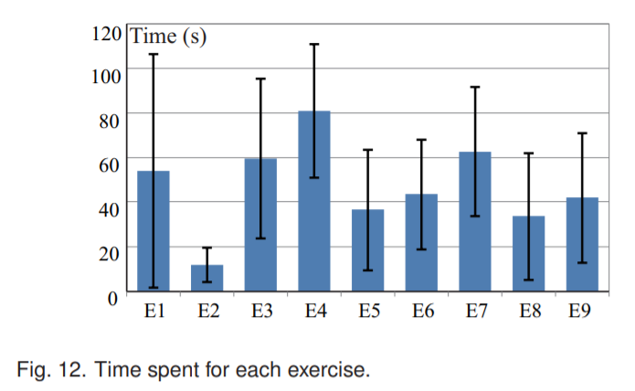
分析师的反馈与讨论
在用户研究结束时，我们采访了分析师和其他参与者。 两位分析师都对分类结果感到满意。 他们评论说，在分析不同类型的交易时，特征提取和决策树的集成是高效和灵活的。 我们要求他们将决策树与之前使用的逻辑回归进行比较。 他们认为我们的模型有几个优点：
- 决策树对于分析师来说很简单易懂。
- 在处理属性的缺失值时，决策树比逻辑回归更强大。
- 使用决策树的分类比逻辑回归更快。
他认为我们可以通过使用更多的信息来改进我们的方法，比如今后买家和卖家的IP地址。
他们评论说，TOS映射是直观的，勘探方便。一位分析师表示：“KnotLines的多用户行为的可视化是创造性和生动的。”*虽然一位分析师认为该系统很难学习，但很少参与者难以解释可视化*，大多数人能够在简短的培训会议后找到有趣的交易。两位分析师都提到，VAET能够帮助他们探索未被发现的交易模式。这是至关重要的，因为“欺骗人总是不断改变伎俩”。他们认为，VAET有能力找到新兴的交易模式，并帮助他们改进数据模型。分析师们渴望将VAET用于实际的多用户应用程序，在这些应用程序中，他们发现许多高维度事务之间的上下文和时间相关性。有趣的是，一些参与者最初认为使用我们的系统需要基本的音乐知识。其他与会者提到，他们对音乐笔记的了解影响了对设计的理解。例如，茎长度固定在音符中，但在我们的设计中是可变的。此外，有些人认为与其他knotbunches（类似于四分之一音符）没有连接的单个knotbunch持续比连接的knotbunch短（类似于第八个音符）。事实是，交易没有持续时间，因为它们都是立即在线发生的。与会者告诉我们，在他们学会如何解读设计之后，这种差异并没有妨碍他们的分析。
CONCLUSION 总结
本文提出了一种用于识别基本交易数据和研究*大片碎片记录*的时间或集体行为的新型视觉探索方案。 在对KnotLines进行选择交易的详细探索和推理之前，执行决策树算法和TOS映射的过滤过程，以从大量记录中选择潜在有趣的交易。 案例研究和用户研究证实，VAET可以有效地支持大部分任务。 根据结果，一些任务如T3需要更好地解决，因为交易模式可以是动态的和多层次的。 为了使VAET更容易学习和使用，我们希望使TOS映射和KnotLines的设计更加直观。 对于未来的工作，我们也希望对更多的数据集进行扩展。
This paper presents a novel visual exploration scheme for identifying elementary transaction data and studying the temporal or collective behavior from large pieces of fragmented records. Prior to detailed exploration and reasoning of the chosen transactions with KnotLines, a decision tree algorithm and a filtering process by TOS map are performed to choose potentially interesting transactions from a huge amount of records. The case study and the user study verify that VAET can effectively support most of the tasks. According to the result, some tasks such as T3 need to be better addressed as the patterns of transactions can be dynamic and multi-level. To make VAET easier to learn and use, we would like to make the design of TOS map and KnotLines more intuitive. For future work, we also would like to extend our approach for more datasets.